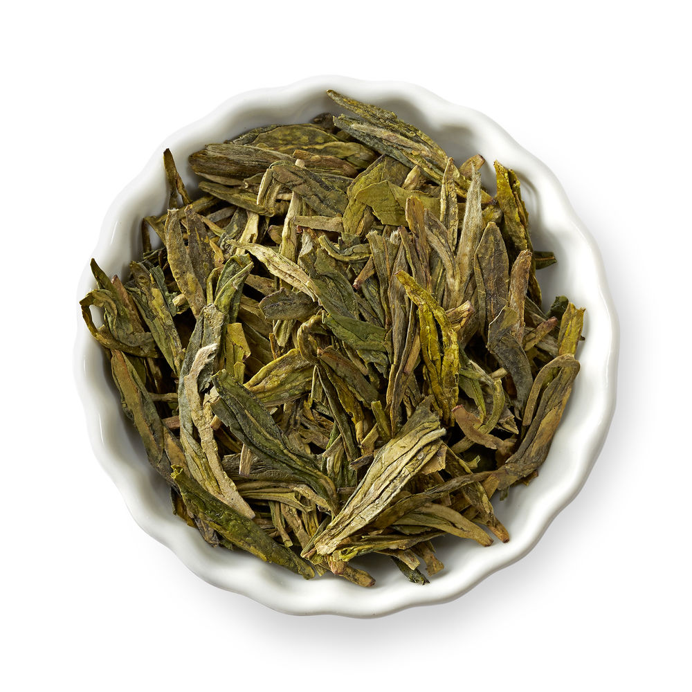

-

Powdered green leaves, packed with flavor Stone-grinded leaves that are sweeping the nation, with its taste as well as uses. Reacently being used as a complent to many dessert around the world. Prime example: Mochi
Matcha
-
Taste the natural sweetness of young, tender tea buds.This renowned Chinese tea is harvested in early spring, before the tea buds and leaves turn from white to green. Known as “sparrow-tongue” for its unique shape, Anji Bai Cha offers the perfect balance of sweetness and umami, with minimum astringency.
Anji Bai Cha
-
Sip world-class flavor from the birthplace of Japanese green teas.Hailing from the Uji region of Kyoto, this medium-bodied tea is renowned for its bright emerald color and oceanic umami flavor. In a country where most teas are harvested by machine, this lot is handpicked and hand-processed after three weeks of shade growth
Uji Gyokuro
-
Robust green tea with refreshing spearmintThis exciting and refreshing blend of Chinese gunpowder green tea and Moroccan spearmint mingle together with every refined and pleasing sip.
Moroccan Mint
-
Acidic yet effectiveThis Popular Green tea,is bright,tangy and toasty warm clean finishing. Day or night the Chun Me we be sure to delight and leave a well-rounded aftertaste.
Chun Me
-

Lightly sweet with a smooth texture and a hint of lingering chestnutHand-flattened jade-green leaves create a mellow-sweet taste with chestnut overtones. Natural sweetness from the jade-green leaf establishes complexity in this renowned sweet nutty tea.
Dragonwell